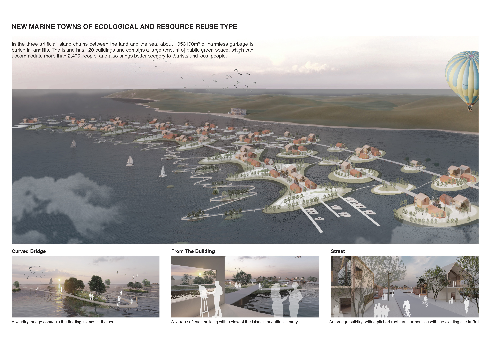
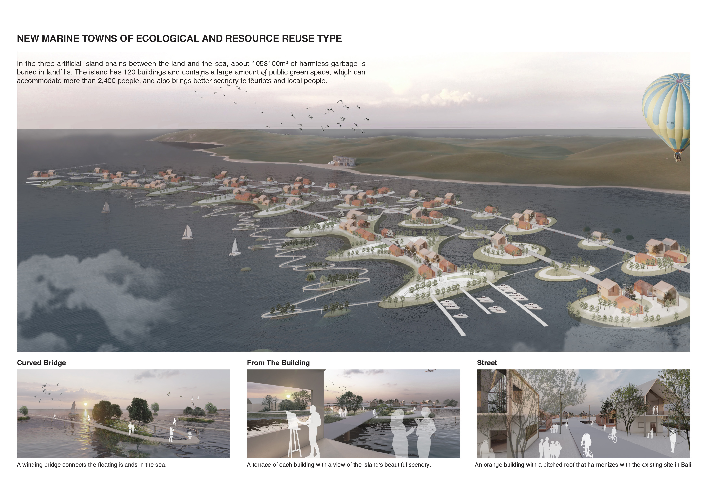

Haoting Gao's second project: Beyond Island
The urban population of Kimbalan Bay is increasing year by year, which leads to the increase of urban garbage discharge and the shortage of urban residential land. In the meanwhile, the bay is also infested by marine rubbish. As a consequence, I designed and built artificial islands and learned the method and process of Palm Island to solve the shortage of urban residential land and the discharge of large amounts of urban and marine garbage into the ocean. Through the artificial construction of islands to solve the contradiction between rapid population expansion and land shortage. At the same time, we can make use of the excellent local seascape resources to create more tourism taxes for the local area.
Besides, I collected urban garbage, recycled harmless and tasteless garbage, buried it in a single seawall unit. And then I tried to pile up boulders around the seawall, spray sand with sea sand boats to form an island, connect the seawall unit with roads to form an island chain, and collect marine plastic waste as building materials for buildings on the island to build houses and landscape facilities. At last, mangroves are planted in the outermost island chain to slow down waves and collect marine garbage, intending to use this environmentally friendly island town design to solve the existing problems of Kimbaran Bay city.
 
